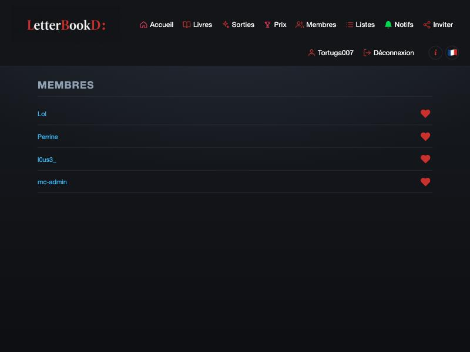

Membres
À quoi ça sert : Suivre les gens de ton club : voir leurs lectures, leurs avis, leurs listes, se tenir au courant de leurs nouveaux coups de cœur. Tu ne vois que les membres avec qui tu partages au moins un club.

Parcours
Liste simple : une ligne par membre, pseudo cliquable (ouvre son profil). À droite, un cœur permet de le marquer comme 'suivi' — c'est ça qui alimente la section 'Membres que je suis' sur ton accueil. Les membres sans aucun club commun n'apparaissent pas ici (règle de visibilité de letterbookd).
Chaînes d'action
Chaque ligne décrit un déclencheur dans l'interface, ce qu'il ouvre (modal ou formulaire), et l'effet produit.
| Déclencheur | Modal / Champs | Effet |
|---|---|---|
| Pseudo d'un membre | — | Ouvre le profil du membre : ses listes, ses lectures, ses avis, filtrés aux clubs que vous partagez. |
| Icône cœur à droite d'un membre | — | Suit/dé-suit le membre. Un membre suivi apparaît en tête de ton accueil ('Membres que je suis') et tu reçois ses nouveaux avis en priorité dans Notifs. |